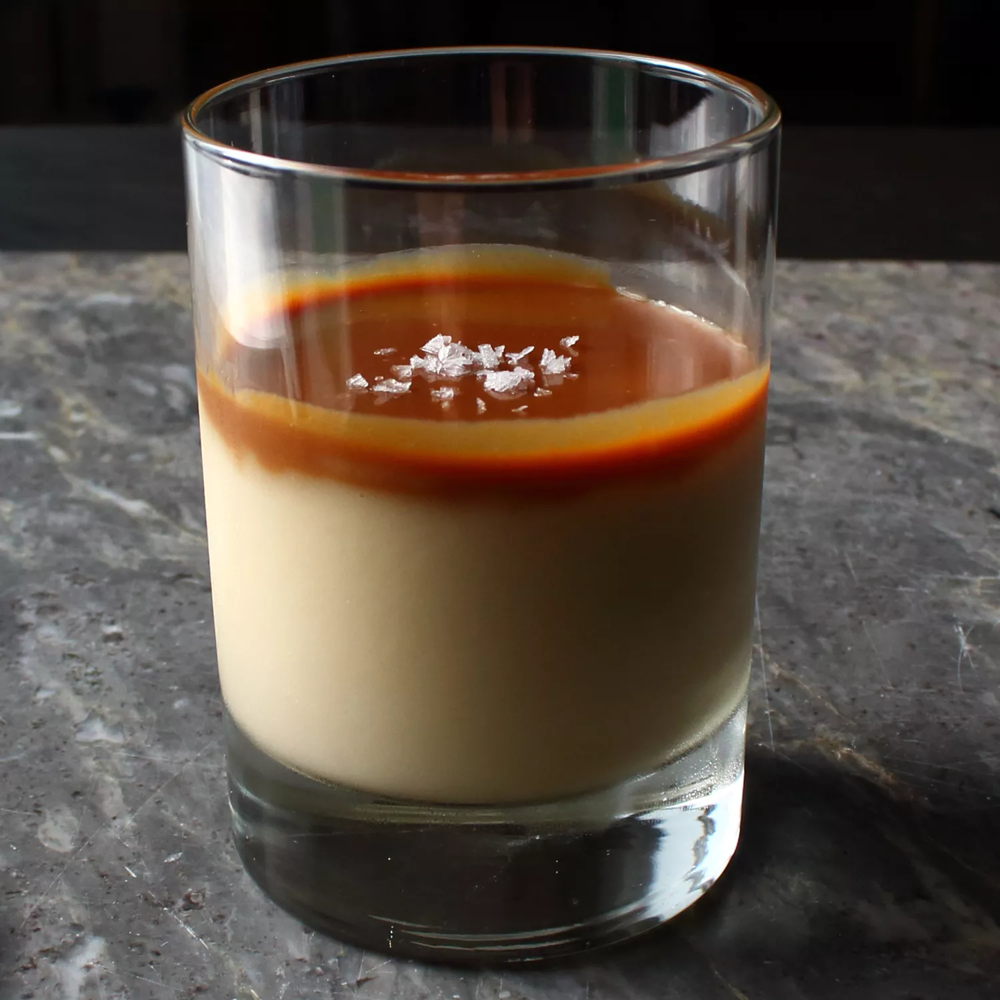

Butterscotch Budino

Italien desset for all ages!!
Ingredients
- ½ cup packed dark brown sugar
- ¼ teaspoon kosher salt
- ¼ cup water
- 2 tablespoons unsalted butter
- 1 ½ cups heavy cream
- ¾ cup milk
- 1 large egg
- 2 large egg yolks
- 2 tablespoons cornstarch
- 1 teaspoon cornstarch
- 1 tablespoon white rum
Steps
- Combine brown sugar, salt, and water in a deep, heavy-bottomed saucepan and place over medium-high heat. Bring to a boil; cook until caramel is very dark, and bubbles appear, 7 to 10 minutes. Immediately turn off the heat.
- Carefully whisk in 2 tablespoons butter; pour in heavy cream and continue to stir. Be careful, as mixture may boil up in the pan. Stir over medium-low heat until sugar dissolves. Whisk in milk.
- Whisk whole egg, egg yolks, and 2 tablespoons plus 1 teaspoon cornstarch together in a mixing bowl. Slowly whisk in 1 cup of hot cream mixture to temper egg mixture. Whisk egg mixture into the saucepan and increase heat to medium-high. Bring to a simmer, and cook, whisking, until mixture thickens, about 2 minutes.
- Remove from heat and pour into a fine-mesh strainer set over a bowl to remove any lumps. Whisk in rum.
- Pour into serving glasses. Let cool to room temperature, about 20 minutes, before wrapping in plastic wrap and refrigerating until thoroughly chilled, 3 to 4 hours.